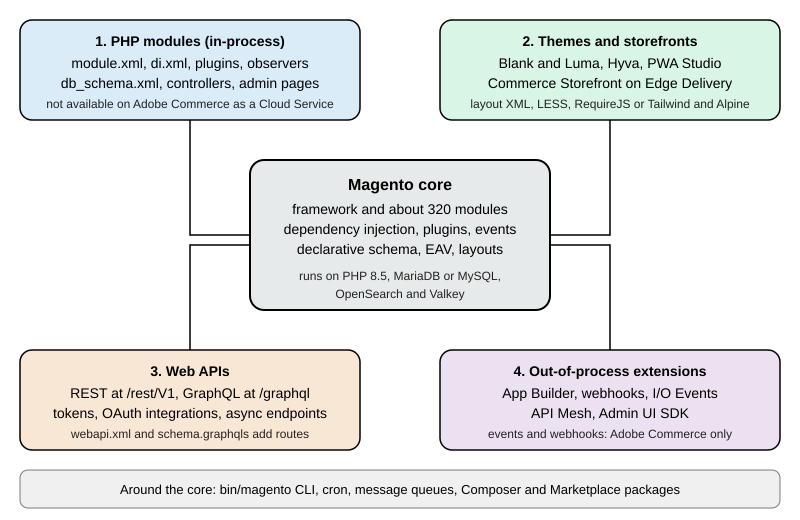

Magento Overview
|
This content was generated with the assistance of AI and should be verified against the official documentation before being relied on in production. |
This subsection documents how to build on Magento, the PHP e-commerce platform that exists as the free Magento Open
Source code base and as the licensed Adobe Commerce editions. It was written against Magento 2.4.9 (generally
available 2026-05-12, standard support until 2029-05-31), with the older lines 2.4.8-p5, 2.4.7-p10 and 2.4.6-p15 mentioned
wherever a shop on them would behave differently, and against the community distribution Mage-OS 3.6.0 (2026-10-14,
based on 2.4.9), which is the environment every example was run on. The newest line, 2.4.10, is in alpha
(2.4.10-alpha1, 2026-10-13). Every fact was checked on 2026-10-27. The
Versions, Lifecycle and Requirements page says which line
to pick and the Editions and Ecosystem page says which edition allows
which kind of extension.
This page explains what Magento is, how it is organised, the surfaces a developer builds on, the resources around it, how the pages fit together as a learning path, and then lists every page. It is the entry point of the Magento subsection of the E-commerce section, which also covers Shopify, PrestaShop and WooCommerce; a side-by-side view is on the Comparison page.
What Magento is
Magento is a modular PHP application built on its own framework. Catalog, inventory, customers, carts, checkout, orders, taxes, promotions, search, the Admin and the storefront are all modules, around 320 of them enabled by default (319 on Mage-OS 3.6.0). They talk to each other through declared interfaces, an XML-configured dependency injection container and an event system, and a store is customised by adding more modules rather than by editing the existing ones. It runs on PHP, a MariaDB or MySQL database, an OpenSearch search engine and a Redis-protocol cache (Valkey, from 2.4.9); optional pieces are Varnish as a full-page cache, a message queue (RabbitMQ or ActiveMQ Artemis) and a system cron.
That architecture has consequences that shape this subsection.
-
You can change almost anything, without editing it. Plugins (interceptors), preferences, observers and layout XML let a module alter another module’s behaviour by declaration. The price is indirection: to know what really runs, you read the merged configuration, not one file. The Dependency Injection and Plugins, Events and Observers pages are central.
-
Configuration is data and code. Behaviour lives in dozens of XML files per module (
module.xml,di.xml,events.xml,routes.xml,webapi.xml,db_schema.xml,acl.xml,system.xml,crontab.xmland more), merged from every module at runtime and cached. When a change does not show, the cache is the first suspect. -
Operations are your job on self-hosted editions. Patches, PHP, database and search versions, cron, queues, the indexers and the full-page cache are yours to run on Open Source and on-premises. On Adobe Commerce on Cloud you share them with Adobe, and on Adobe Commerce as a Cloud Service Adobe runs them. The Caching, Indexing and Performance and Security pages cover the production side.
-
The platform moves, and so do the books. The 2016 books on Magento 2 describe Zend Framework, the Web Setup Wizard,
InstallSchemascripts and Magento Connect, none of which is current. This subsection flags the legacy approaches that readers still meet in older stores and gives the current replacement.
For market context, W3Techs (which labels it Adobe Commerce) reports Magento at 1.6% of the sites whose e-commerce system
it can detect and at 0.3% of all sites (checked 2026-10-27), and Store Leads counted 102,287 live Magento stores against a
peak of 163,714 in the fourth quarter of 2022. In the Web Almanac 2025 data Magento powers 2.2% of the mobile e-commerce
sites measured, and Stack Overflow holds 37,173 questions tagged magento and 4,962 tagged magento2 (plus 113,253 on the
Magento Stack Exchange site). The Comparison page carries the dated figures and their sources.
Licence and distributions
The Open Source code base lives at github.com/magento/magento2 and is licensed under
the Open Software License 3.0 (the composer.json of tag 2.4.9 declares OSL-3.0 and AFL-3.0). It is free to download and
modify, but the official Composer repository asks for Marketplace access keys. Mage-OS publishes the same code under its
own repository and name, installable without keys, and Adobe Commerce is the licensed edition that adds features, support
and hosting. The Editions and Ecosystem page compares all of them, together with Hyvä and PWA Studio.
The four customization surfaces
Adobe’s documentation lists many extension points. For a developer the useful grouping is the one below, because it matches how work is divided, and because the out-of-process surface is the one that Adobe recommends for new work and the only one available on the SaaS edition.

| Surface | What you write | Where it runs | Main pages |
|---|---|---|---|
PHP modules |
A folder in |
Inside the Commerce process (in-process), on your server or Adobe’s PaaS. Not available on Adobe Commerce as a Cloud Service. |
Module Anatomy, Dependency Injection, Plugins, Events and Observers, Declarative Schema and Patches |
Themes and storefronts |
Layout XML, templates, LESS, RequireJS and Knockout for Luma; Tailwind and Alpine for Hyvä; React for PWA Studio; Edge Delivery blocks and drop-ins for Adobe’s Commerce Storefront |
In the browser and in the storefront request. A theme can inherit from another. |
Frontend: Luma Themes, Frontend: Hyvä, PWA Studio and Edge Delivery |
Web APIs |
HTTP clients for REST ( |
Your own application, calling the shop over HTTP. |
|
Out-of-process extensions |
Apps on Adobe Developer App Builder that react to I/O Events and webhooks and call the APIs; API Mesh and the Admin UI SDK |
Outside Commerce, on Adobe’s runtime. Events and webhooks are documented for Adobe Commerce. |
PHP modules
A module is the unit of extension. It declares itself with registration.php and etc/module.xml, lists its dependencies
in composer.json and a sequence, and then adds behaviour through XML files in etc/. The module list is the same for
Magento’s own features and yours, so the best way to learn is to read a core module. After a module is enabled with
bin/magento module:enable, bin/magento setup:upgrade registers it and runs its schema and data patches.
Themes and storefronts
A theme controls the look of the storefront and the Admin. Magento ships Blank and Luma; a theme inherits from a
parent, and layout XML and templates (.phtml) are overridden by file path. Hyvä replaces the Luma front end with a
lighter stack and is free since November 2025. PWA Studio is Adobe’s React storefront toolkit, and Adobe Commerce
Storefront on Edge Delivery Services is the headless storefront of the Adobe cloud offerings.
Web APIs
Magento exposes the same business logic through service contracts as REST and GraphQL. REST covers the whole domain
(products, orders, customers, carts, configuration), GraphQL is aimed at storefronts, and both can be extended by a module.
Tokens come from POST /rest/V1/integration/admin/token and POST /rest/V1/integration/customer/token, and from OAuth
for integrations; with Adobe IMS on SaaS they come from Adobe.
Out-of-process extensions
Adobe’s extensibility documentation defines this model as custom business logic, integrations and user experiences that run as applications outside the Commerce process and communicate through supported APIs, events, webhooks and extension points. It is the only extension model on Adobe Commerce as a Cloud Service and the recommended one for new Commerce apps on the other Adobe editions. Open Source cannot use Adobe I/O Events.
The project ecosystem
Most of what you need to know about a version lives outside the code repository. The table lists the resources used throughout these pages.
| Resource | What it is | Notes |
|---|---|---|
The developer guide: PHP development (modules, DI, plugins, declarative schema, CLI), Web APIs, frontend core, extensibility, testing and MFTF, Cloud Docker, PWA Studio. |
Many pages work only with or without a trailing slash; the links in this subsection use the working form. |
|
The lifecycle policy, released versions, release notes, system requirements, installation, configuration, upgrade guide and Cloud enforcement policy. |
Pages do not accept a trailing slash. Appending |
|
The Open Source repository: releases and tags ( |
The default branch is |
|
The community distribution, its releases, FAQ and the Mage-OS Lab of community modules. |
Installs without Adobe keys. |
|
The APSB bulletins that announce every patch and hotfix. |
Bulletin pages refuse some automated requests; open them in a browser. |
|
The Hyvä Theme, its compatibility modules and its commercial products. |
Hyvä Theme became free in November 2025. |
|
The catalogues of PHP extensions and of App Builder apps. |
Marketplace installs need access keys. |
|
The one official Docker tooling, for Adobe Commerce on Cloud projects. |
Warden, DDEV and |
Community help comes from the Magento Stack Exchange site, GitHub discussions and issues, the Mage-OS Discord, Meet Magento events and agencies. Adobe Commerce customers also have Adobe Support. The software on the Open Source side has no warranty and no dedicated support channel.
What’s covered
Foundation
-
Editions and Ecosystem: Open Source, Adobe Commerce, ACCS, Mage-OS, Hyvä and what each allows in-process and out-of-process.
-
Versions, Lifecycle and Requirements: release lines, patches, end-of-support dates, the services matrix and Cloud enforcement deadlines.
-
Installation: Composer,
setup:install, search, cache, queues, cron, the Admin URI and server recipes. -
Local Development Environments: Cloud Docker, Warden, DDEV, docker-magento and a Mage-OS install.
-
Admin and Store Setup: catalog, attribute sets, customer groups, taxes, shipping, currencies, CMS, SEO and a launch checklist.
Architecture
-
Architecture Overview: layers, areas, the request flow,
env.php,config.phpand application modes. -
Module Anatomy:
registration.php,module.xml, the file structure and enabling a module. -
Dependency Injection:
di.xml, preferences, virtual types, factories and proxies. -
Plugins, Events and Observers: interceptors,
sortOrder, limitations and events. -
Service Contracts and Repositories: data interfaces, repositories,
SearchCriteriaand extension attributes. -
Declarative Schema and Patches:
db_schema.xml, data and schema patches and the legacy scripts. -
EAV and Attributes: the entity-attribute-value model and product, customer and category attributes.
Storefront, Admin and background work
-
Routing, Controllers, Blocks, Layouts and Templates:
routes.xml, controllers, blocks, ViewModels, layout XML and escaping. -
Admin Development: ACL, menus, system configuration and UI component grids and forms.
-
CLI, Cron and Message Queues: custom commands,
crontab.xmland consumers. -
Caching, Indexing and Performance: cache types, Varnish, Valkey, indexers and tuning.
-
Frontend: Luma Themes: Blank and Luma, inheritance, LESS, RequireJS and static content deployment.
-
Frontend: Hyvä, PWA Studio and Edge Delivery: the alternative storefronts and their status.
APIs and extensibility
-
REST and GraphQL APIs:
webapi.xml, custom routes, GraphQL schema and resolvers and the 2.4.9 limits. -
API Authentication: tokens, OAuth integrations, 2FA and Adobe IMS.
-
Out-of-Process Extensibility: App Builder, I/O Events, webhooks, Admin UI SDK and API Mesh.
Commerce features
-
Checkout and Payments: the checkout, payment gateways, the vault and Payment Services.
-
Catalog, Multistore and B2B: product types, scopes and B2B.
Production and reference
-
Security: patch cadence, incident history, 2FA, CSP and secure coding.
-
Testing, Coding Standards and Marketplace: unit, integration and MFTF tests, PHPCS Magento2 and the extension quality programme.
-
Upgrades: planning, backward-incompatible changes and dependency migrations.
-
Cheat Sheet (PDF): a one-page summary with a downloadable PDF.
Cloud deployment
-
Cloud: Reference Architecture: the five services Magento needs, identical pods behind Varnish and where each kind of state goes.
-
Cloud: Managed Database (RDS and Aurora): RDS and Aurora, env.php from the environment, TLS and the definer and binary logging parameters.
-
Cloud: OpenSearch, Valkey and RabbitMQ as Managed Services: managed OpenSearch, two Valkey groups and Amazon MQ for RabbitMQ, and how their endpoints reach env.php.
-
Cloud: Container Image and Pipeline Build: the build system versus the production system, config.php, DI compilation and static content at build time.
-
Cloud: Media and Remote Storage: remote storage with the S3 driver against an EFS volume at pub/media.
-
Cloud: Varnish and Full Page Cache on Kubernetes: Varnish as a StatefulSet, purging every replica, the VCL and grace mode.
-
Cloud: Cron, Queue Consumers and Indexers: one cron scheduler, queue consumers as Deployments scaled by KEDA and indexers on Update by Schedule.
-
Cloud: EKS Infrastructure and Helm Deployment: a validated OpenTofu module and Helm chart for Magento on EKS.
-
Cloud: Releases and Zero-Downtime Deployments: the setup:db:status gate, setup:upgrade as a pre-upgrade Job and rolling out without downtime.
-
Cloud: Autoscaling, Observability, Backups and Security: autoscaling, PHP-FPM metrics, logs, slow queries, backups and security.
-
Cloud: Migrating from a Single Server: moving a shop to EKS, RDS, S3 and OpenSearch with DEFINER handling and a cutover plan.
-
Cloud: Google Cloud, Azure and Alternatives: GKE and AKS equivalents, what stays self-managed, and alternatives to Kubernetes.
What this subsection could not run
Everything marked as run in these pages was executed on a local Mage-OS 3.6.0 test shop created on 2026-10-27 from the public
Mage-OS Composer repository, with PHP 8.5.12, MariaDB 11.8.9, OpenSearch 3.9.0 and Valkey 9.1.3. The following were
documented from the official sources and not executed: installs from repo.magento.com (they need Marketplace access keys),
every Adobe Commerce-only feature (B2B, Page Builder database features, Live Search, the Upgrade Compatibility Tool and the
Quality Patches Tool), Adobe Commerce on Cloud and Adobe Commerce as a Cloud Service, Adobe I/O Events, webhooks and App
Builder, production mode with static content deployment, cron, Varnish, RabbitMQ and ActiveMQ Artemis, and Hyvä and PWA
Studio installs. Mage-OS is not byte-identical to Adobe’s 2.4.9, so removals documented by Adobe cannot all be shown on it.
Reading path
The pages are ordered so that each depends only on earlier ones. Pick the track that matches the job, but read the foundation first.
Typical routes: a merchant’s technical lead reads stages 1 and 6 and the production pages and keeps the cheat sheet nearby; a module developer reads stages 1 to 4 and then testing; a frontend developer reads stages 1, 2 and 4, then the Hyvä page; an integrator reads stage 1, the API pages and the out-of-process page; a team on Adobe Commerce as a Cloud Service reads the Editions page first and then mostly stage 5; a team moving to Kubernetes on AWS reads stage 1, the production pages and then the cloud pages in order. Some knowledge outside this subsection helps: PHP and Composer (see the PHP section), Redis-protocol caches (see Redis), search engines (see Elasticsearch), message brokers (see Messaging) and Docker (see Docker).
Running example
All pages share one invented shop, Pocket Coffee, a small specialty-coffee seller. It has a "Single-origin beans"
product with three options (origin, grind and size) giving 18 combinations and SKUs such as PC-ETH-WHL-250, a "Starter
kit" product, a Coffee Club customer group with 10% off beans, free shipping above 40 EUR in Spain, a flat 9.90 EUR rate
for the rest of the European Union, and Spanish and English storefronts. On Magento it is built with the pieces below, and
each page builds its own part.
| Pocket Coffee need | Built with |
|---|---|
A running shop to develop against |
Composer install and |
18 bean variants, categories Beans and Equipment, the filterable origin attribute |
Configurable products, attribute sets and EAV attributes, see Admin and Store Setup and EAV and Attributes |
Coffee Club group and its 10% discount on beans |
A customer group with a catalog price rule, see Catalog, Multistore and B2B |
Spain and EU shipping, Spanish and English store views, EUR and USD |
Shipping methods, websites, stores and store views, see Admin and Store Setup and Catalog, Multistore and B2B |
Roast date badge on the product page |
A product attribute, a plugin or ViewModel and a layout and template, see Plugins, Events and Observers and Routing, Controllers, Blocks, Layouts and Templates |
"Order placed" log |
An observer on an order event, see Plugins, Events and Observers |
Reading products and creating an order from outside |
REST and GraphQL with a token, see REST and GraphQL APIs and API Authentication |
A first look at the running shop
The commands below were run against a local Mage-OS 3.6.0 test shop (developer mode, PHP 8.5.12, MariaDB 11.8.9, OpenSearch
3.9.0, Valkey 9.1.3) served at http://localhost:8082. They only read data. The shop has one sample product and no
other data.
The command line
bin/magento is a Symfony console that runs as the web server user from the shop root. It is the entry point for
installation, modules, indexers, cache, cron and queues.
bin/magento --version
bin/magento deploy:mode:show
bin/magento config:show catalog/search/engine
bin/magento module:status | grep -c "^Magento_"
bin/magento list | grep -E "^ +(cache:flush|cron:run|indexer:reindex|setup:upgrade|setup:di:compile|module:enable)"The outputs were Mage-OS CLI 3.6.0 (based on Magento 2.4.9), Current application mode: developer. followed by a note that
environment variables may override the value, opensearch, 319 enabled Magento_* modules, and one line per command with
its description, for example cache:flush with "Flushes cache storage used by cache type(s)" and setup:upgrade with
"Upgrades the Magento application, DB data, and schema". On a stock Adobe install the first line reads Magento CLI with
the version instead of the Mage-OS banner.
REST
Magento’s REST API lives under /rest, with /rest/default/V1/... selecting the default store view. Public resources
need no token; protected ones return HTTP 401.
curl -s http://localhost:8082/rest/default/V1/directory/countries/ES
curl -s -o /dev/null -w "%{http_code}\n" http://localhost:8082/rest/V1/store/websitesThe first call returned the country record for Spain (two_letter_abbreviation ES, full_name_english Spain, and its
available regions); the second printed 401, because the website list needs an admin token. The error body names the
missing permission as the Magento_Backend::store resource, and in developer mode it also carries a stack trace, one more
reason not to run developer mode on a public server. The
API Authentication page obtains a token; with the native Admin 2FA module
enabled, the admin token endpoint refuses until 2FA is configured, so the test shop has that module disabled for local
work only.
GraphQL
GraphQL has a single endpoint, /graphql, and the catalog and cart queries work without authentication. The
GraphQL section explains the language; Magento’s schema is in the
REST and GraphQL APIs page.
curl -s -X POST http://localhost:8082/graphql \
-H "Content-Type: application/json" \
-d '{"query":"{ storeConfig { store_code base_currency_code locale } }"}'The response was {"data":{"storeConfig":{"store_code":"default","base_currency_code":"USD","locale":"en_US"}}}. The
storefront at the shop root returned HTTP 200, and the Admin login page answered at /admin_local, the Admin URI chosen
for the local install (a stock install without --backend-frontname gets a random one, which the
Installation page explains). OAuth basics are in the
OAuth section.
Bibliography
Books
The books below were consulted for the topics they cover and rewritten for the current platform version; where a book describes an older release, the pages say so. No text, listing or figure is copied from them, and on any discrepancy the official documentation wins. Publisher pages that refused automated requests are marked (unverified); the ISBN, title, author and year were cross-checked against Open Library and Crossref.
-
Fernando J. Miguel and Richard Carter, Magento 2 Theme Design, 2nd edition, Packt, 2016, ISBN 978-1-78588-822-9: publisher page (unverified).
-
Fernando J. Miguel, Magento 2 Development Essentials, Packt, 2016, ISBN 978-1-78528-989-7: publisher page (unverified).
-
Ray Bogman and Vladimir Kerkhoff, Magento 2 Cookbook, Packt, 2016, ISBN 978-1-78588-706-2: publisher page (unverified).
-
Viktor Khliupko, Magento 2 DIY, Apress, 2016, ISBN 978-1-4842-2459-5: publisher page (unverified).
The full cited-URL bibliography of the E-commerce section is on the E-commerce section page; the online sources of this subsection are under References.
References
Cloud deployment
The sources below were consulted for the cloud deployment pages; each entry links to its official website.
Magento
-
Adobe Commerce developer docs: Configure a custom cron job and cron group
-
Adobe Commerce developer docs: Sensitive and environment-specific settings
-
Adobe Commerce developer documentation: Observability installation
-
Adobe Commerce docs: Cache clearing with multiple Varnish instances
-
Adobe Commerce docs: Commerce on Cloud configuration files overview
-
Adobe Commerce docs: Required actions and deadlines to secure Commerce environments
-
Adobe Commerce on cloud infrastructure: Zero downtime deployment
-
Adobe Experience League: Investigate performance with New Relic
-
Adobe Experience League: Secure your Commerce site and infrastructure
-
Adobe Experience League: Two-factor authentication in the Admin FAQ
Amazon Web Services
-
Amazon CloudWatch: Container Insights with the CloudWatch Observability add-on
-
Amazon ElastiCache User Guide: Engine versions and upgrading
-
Amazon ElastiCache: Authenticating with the Valkey and Redis OSS AUTH command
-
Amazon MQ Developer Guide: Amazon MQ for RabbitMQ broker users
-
Amazon OpenSearch Service: What is, supported versions and support schedule
-
Amazon RDS User Guide: Managing an RDS Proxy (avoiding pinning)
-
Amazon RDS User Guide: Password management with Secrets Manager
-
AWS DMS User Guide: Using a MySQL-compatible database as a source
-
Using SSL/TLS to encrypt a connection to a DB instance or cluster